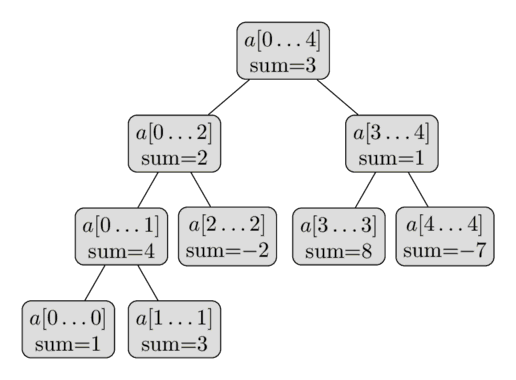
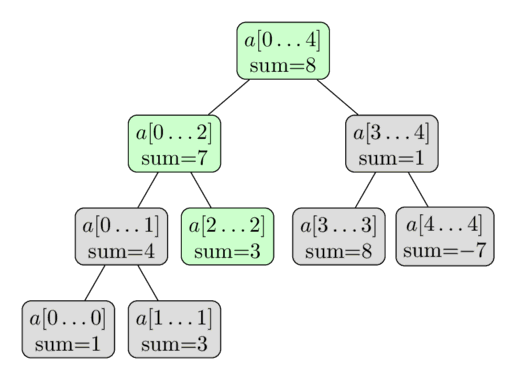

Cây phân đoạn (Segment Tree)¶
Cây phân đoạn (Segment Tree) là một cấu trúc dữ liệu lưu thông tin về các đoạn của mảng dưới dạng cây. Nhờ đó ta có thể trả lời hiệu quả các truy vấn trên đoạn, đồng thời vẫn đủ linh hoạt để sửa đổi mảng nhanh chóng. Ví dụ, ta có thể tìm tổng của các phần tử liên tiếp $a[l \dots r]$, hoặc tìm phần tử nhỏ nhất trong một đoạn như vậy trong $O(\log n)$. Giữa các truy vấn, cây phân đoạn cho phép sửa mảng bằng cách thay thế một phần tử, hoặc thậm chí thay đổi các phần tử của cả một đoạn con (chẳng hạn gán mọi phần tử $a[l \dots r]$ thành một giá trị bất kỳ, hoặc cộng một giá trị vào mọi phần tử trong đoạn con).
Nhìn chung, cây phân đoạn là một cấu trúc dữ liệu rất linh hoạt và có thể giải được rất nhiều bài toán. Ngoài ra, ta còn có thể áp dụng các phép toán phức tạp hơn và trả lời những truy vấn phức tạp hơn (xem Các phiên bản nâng cao của cây phân đoạn). Đặc biệt, cây phân đoạn có thể được tổng quát hóa khá dễ dàng lên nhiều chiều hơn. Chẳng hạn, với cây phân đoạn hai chiều, ta có thể trả lời truy vấn tổng hoặc giá trị nhỏ nhất trên một hình chữ nhật con của ma trận chỉ trong $O(\log^2 n)$.
Một tính chất quan trọng của cây phân đoạn là nó chỉ cần lượng bộ nhớ tuyến tính. Cây phân đoạn tiêu chuẩn cần $4n$ nút để làm việc với một mảng kích thước $n$.
Dạng đơn giản nhất của cây phân đoạn¶
Để bắt đầu từ trường hợp dễ nhất, ta xét dạng đơn giản nhất của cây phân đoạn. Ta muốn trả lời hiệu quả các truy vấn tổng. Phát biểu chính thức của bài toán là: Cho một mảng $a[0 \dots n-1]$, cây phân đoạn phải có khả năng tìm tổng các phần tử giữa hai chỉ số $l$ và $r$ (tức tính tổng $\sum_{i=l}^r a[i]$), đồng thời xử lý việc thay đổi giá trị các phần tử trong mảng (tức thực hiện các phép gán dạng $a[i] = x$). Cây phân đoạn cần xử lý cả hai loại truy vấn trong $O(\log n)$.
Đây là một cải tiến so với các cách đơn giản hơn. Nếu chỉ dùng một mảng thông thường, ta có thể cập nhật phần tử trong $O(1)$, nhưng cần $O(n)$ để tính mỗi truy vấn tổng. Ngược lại, mảng tổng tiền tố đã tính trước có thể trả lời truy vấn tổng trong $O(1)$, nhưng khi cập nhật một phần tử của mảng thì phải thực hiện $O(n)$ thay đổi trên mảng tổng tiền tố.
Cấu trúc của cây phân đoạn¶
Ta có thể áp dụng tư tưởng chia để trị lên các đoạn của mảng. Đầu tiên, ta tính và lưu tổng các phần tử của toàn bộ mảng, tức tổng của đoạn $a[0 \dots n-1]$. Sau đó ta chia mảng thành hai nửa $a[0 \dots (n-1)/2]$ và $a[(n+1)/2 \dots n-1]$, tính tổng của mỗi nửa rồi lưu lại. Mỗi nửa lại tiếp tục được chia đôi, cứ thế cho đến khi mọi đoạn đều có kích thước $1$.
Ta có thể xem các đoạn này tạo thành một cây nhị phân: gốc của cây là đoạn $a[0 \dots n-1]$, và mỗi nút (trừ các nút lá) có đúng hai nút con. Đó là lý do cấu trúc dữ liệu này được gọi là "Segment Tree", mặc dù trong phần lớn cách cài đặt cây không được dựng tường minh (xem Cài đặt).
Dưới đây là hình minh họa một cây phân đoạn trên mảng $a = [1, 3, -2, 8, -7]$:

Từ mô tả ngắn này, ta đã có thể kết luận rằng cây phân đoạn chỉ cần số lượng nút tuyến tính. Tầng đầu tiên của cây có một nút (nút gốc), tầng thứ hai có hai nút, tầng thứ ba có bốn nút, và cứ thế cho đến khi số nút đạt $n$. Vì vậy, số nút trong trường hợp xấu nhất có thể được ước lượng bởi tổng $1 + 2 + 4 + \dots + 2^{\lceil\log_2 n\rceil} \lt 2^{\lceil\log_2 n\rceil + 1} \lt 4n$.
Cần lưu ý rằng khi $n$ không phải lũy thừa của hai, không phải mọi tầng của cây phân đoạn đều được lấp đầy hoàn toàn. Ta có thể thấy hiện tượng đó trong hình. Hiện tại có thể tạm bỏ qua chi tiết này, nhưng nó sẽ trở nên quan trọng khi cài đặt.
Chiều cao của cây phân đoạn là $O(\log n)$, vì khi đi từ gốc xuống lá, kích thước các đoạn giảm xấp xỉ một nửa sau mỗi tầng.
Xây dựng¶
Trước khi dựng cây phân đoạn, ta cần quyết định:
- giá trị được lưu tại mỗi nút của cây phân đoạn. Chẳng hạn, trong cây phân đoạn tính tổng, một nút sẽ lưu tổng các phần tử trong đoạn $[l, r]$ mà nó quản lý.
- phép hợp nhất hai nút anh em trong cây phân đoạn. Chẳng hạn, trong cây phân đoạn tính tổng, hai nút tương ứng với các đoạn $a[l_1 \dots r_1]$ và $a[l_2 \dots r_2]$ được hợp nhất thành một nút tương ứng với đoạn $a[l_1 \dots r_2]$ bằng cách cộng giá trị của hai nút.
Lưu ý rằng một nút là "nút lá" nếu đoạn tương ứng của nó chỉ bao phủ một giá trị trong mảng ban đầu. Nó nằm ở tầng thấp nhất của cây phân đoạn. Giá trị của nút đó bằng phần tử tương ứng $a[i]$.
Bây giờ, để dựng cây phân đoạn, ta bắt đầu từ tầng dưới cùng (các nút lá) và gán cho chúng các giá trị tương ứng. Từ các giá trị này, ta có thể tính các giá trị ở tầng phía trên bằng hàm merge.
Dựa trên tầng vừa tính, ta tiếp tục tính tầng phía trên nữa, lặp lại cho tới khi đạt nút gốc.
Sẽ thuận tiện hơn nếu mô tả thao tác này theo hướng ngược lại bằng đệ quy, tức từ nút gốc tới các nút lá. Nếu thủ tục dựng cây được gọi trên một nút không phải lá, nó thực hiện:
- đệ quy dựng giá trị của hai nút con
- hợp nhất các giá trị đã tính của hai nút con.
Ta bắt đầu dựng từ nút gốc, nhờ vậy có thể tính toàn bộ cây phân đoạn.
Độ phức tạp thời gian của quá trình xây dựng là $O(n)$, giả sử phép hợp nhất chạy trong thời gian hằng số (phép hợp nhất được gọi $n$ lần, bằng số nút trong của cây phân đoạn).
Ghi chú bản dịch: Với cây nhị phân đầy đủ có n nút lá, số nút trong thực tế là n-1, nên số lần hợp nhất là n-1 chứ không phải n. Độ phức tạp O(n) của nguồn vẫn đúng; upstream đã có PR #1560 sửa chính xác chi tiết đếm này.
Truy vấn tổng¶
Trước mắt, ta sẽ trả lời các truy vấn tổng. Đầu vào là hai số nguyên $l$ và $r$, và ta cần tính tổng của đoạn $a[l \dots r]$ trong $O(\log n)$.
Để làm vậy, ta duyệt cây phân đoạn và dùng các tổng của đoạn đã được tính trước. Giả sử hiện tại ta đang ở nút quản lý đoạn $a[tl \dots tr]$. Có ba trường hợp có thể xảy ra.
Trường hợp dễ nhất là đoạn $a[l \dots r]$ trùng với đoạn tương ứng của nút hiện tại (tức $a[l \dots r] = a[tl \dots tr]$). Khi đó ta đã xong và có thể trả về tổng đã được tính trước, đang lưu ở nút này.
Một khả năng khác là đoạn truy vấn nằm hoàn toàn trong miền của nút con trái hoặc nút con phải. Nhắc lại rằng nút con trái quản lý đoạn $a[tl \dots tm]$, còn nút con phải quản lý đoạn $a[tm + 1 \dots tr]$ với $tm = (tl + tr) / 2$. Trong trường hợp này, ta chỉ cần đi xuống nút con có đoạn tương ứng bao phủ đoạn truy vấn, rồi chạy thuật toán đang mô tả trên nút đó.
Cuối cùng, đoạn truy vấn có thể giao với cả hai nút con. Khi đó ta phải thực hiện hai lời gọi đệ quy, mỗi lời gọi cho một nút con. Đầu tiên ta đi sang nút con trái, tính một phần đáp án tại đó (tức tổng các giá trị thuộc giao giữa đoạn truy vấn và đoạn của nút con trái), sau đó đi sang nút con phải, tính phần đáp án còn lại rồi cộng hai kết quả. Nói cách khác, vì nút con trái biểu diễn đoạn $a[tl \dots tm]$ và nút con phải biểu diễn đoạn $a[tm+1 \dots tr]$, ta tính truy vấn tổng $a[l \dots tm]$ bằng nút con trái và truy vấn tổng $a[tm+1 \dots r]$ bằng nút con phải.
Như vậy, xử lý truy vấn tổng là một hàm đệ quy tự gọi một lần với nút con trái hoặc phải (không đổi biên truy vấn), hoặc hai lần, một lần cho trái và một lần cho phải (chia truy vấn thành hai truy vấn con). Đệ quy dừng khi biên của đoạn truy vấn hiện tại trùng với biên đoạn của nút hiện tại. Khi đó, đáp án là giá trị tổng đã tính trước của đoạn này được lưu trong cây.
Nói cách khác, việc tính truy vấn là một quá trình duyệt cây, lan qua tất cả các nhánh cần thiết và sử dụng các giá trị tổng của đoạn đã tính sẵn trong cây.
Dĩ nhiên ta sẽ bắt đầu duyệt từ nút gốc của cây phân đoạn.
Quy trình được minh họa trong hình dưới đây. Ta lại dùng mảng $a = [1, 3, -2, 8, -7]$, và lần này cần tính tổng $\sum_{i=2}^4 a[i]$. Các nút được tô màu là những nút sẽ được thăm, còn giá trị tính sẵn của các nút màu xanh lá sẽ được sử dụng. Kết quả là $-2 + 1 = -1$.

Tại sao thuật toán này có độ phức tạp $O(\log n)$? Để chứng minh, ta xét từng tầng của cây. Có thể thấy ở mỗi tầng ta thăm không quá bốn nút. Do chiều cao cây là $O(\log n)$, ta thu được thời gian chạy mong muốn.
Ta có thể chứng minh mệnh đề này (mỗi tầng nhiều nhất bốn nút) bằng quy nạp. Ở tầng đầu tiên, ta chỉ thăm một nút là nút gốc, nên chắc chắn ít hơn bốn nút. Bây giờ xét một tầng bất kỳ. Theo giả thiết quy nạp, ta thăm không quá bốn nút. Nếu chỉ thăm tối đa hai nút, tầng tiếp theo có nhiều nhất bốn nút. Điều này hiển nhiên vì mỗi nút chỉ có thể tạo ra tối đa hai lời gọi đệ quy. Vậy giả sử ta thăm ba hoặc bốn nút ở tầng hiện tại. Trong các nút đó, hãy xét kỹ hơn những nút nằm ở giữa. Do truy vấn tổng hỏi tổng của một mảng con liên tiếp, ta biết các đoạn tương ứng với những nút ở giữa sẽ nằm hoàn toàn trong đoạn truy vấn. Do đó, các nút này không tạo thêm lời gọi đệ quy. Chỉ nút ngoài cùng bên trái và nút ngoài cùng bên phải có khả năng tạo lời gọi đệ quy. Chúng tạo ra nhiều nhất bốn lời gọi, vì thế tầng kế tiếp cũng thỏa mệnh đề. Có thể hình dung một nhánh tiến dần tới biên trái của truy vấn, còn nhánh thứ hai tiến dần tới biên phải.
Vì vậy tổng cộng ta thăm nhiều nhất $4 \log n$ nút, tương đương thời gian chạy $O(\log n)$.
Tóm lại, truy vấn hoạt động bằng cách chia đoạn đầu vào thành một số đoạn con mà tổng của chúng đã được tính trước và lưu trong cây. Nếu ta dừng chia khi đoạn truy vấn trùng với đoạn của nút, thì chỉ cần $O(\log n)$ đoạn như vậy, tạo nên hiệu quả của cây phân đoạn.
Truy vấn cập nhật¶
Bây giờ ta muốn sửa một phần tử cụ thể trong mảng, chẳng hạn thực hiện phép gán $a[i] = x$. Ta phải cập nhật lại cây phân đoạn để nó tương ứng với mảng mới.
Truy vấn này đơn giản hơn truy vấn tổng. Mỗi tầng của cây phân đoạn tạo thành một phân hoạch của mảng. Vì vậy, một phần tử $a[i]$ chỉ đóng góp vào một đoạn ở mỗi tầng. Do đó chỉ cần cập nhật $O(\log n)$ nút.
Dễ thấy truy vấn cập nhật có thể được cài đặt bằng một hàm đệ quy. Hàm nhận nút hiện tại của cây, gọi đệ quy trên một trong hai nút con (nút có đoạn chứa $a[i]$), rồi sau đó tính lại giá trị tổng của nút hiện tại, tương tự cách làm trong hàm build (tức lấy tổng của hai nút con).
Một lần nữa, đây là hình minh họa dùng cùng mảng. Ta thực hiện cập nhật $a[2] = 3$. Các nút màu xanh lá là những nút được thăm và cập nhật.

Cài đặt¶
Vấn đề chính là cách lưu cây phân đoạn. Dĩ nhiên ta có thể định nghĩa một struct $\text{Vertex}$ và tạo các đối tượng lưu biên đoạn, tổng, cùng các con trỏ tới nút con. Tuy nhiên, cách này phải lưu khá nhiều thông tin dư thừa dưới dạng con trỏ. Ta sẽ dùng một mẹo đơn giản để hiệu quả hơn nhiều bằng cách dùng một cấu trúc dữ liệu ẩn: chỉ lưu các tổng trong một mảng. (Một cách tương tự được dùng cho binary heap). Tổng ở nút gốc được lưu tại chỉ số 1, tổng của hai nút con tại chỉ số 2 và 3, tổng của các nút con ở tầng tiếp theo tại các chỉ số 4 tới 7, v.v. Với cách đánh số từ 1, nút con trái của nút có chỉ số $i$ được lưu tại chỉ số $2i$, còn nút con phải tại $2i + 1$. Tương tự, cha của nút có chỉ số $i$ được lưu tại $i/2$ (phép chia nguyên).
Cách này đơn giản hóa cài đặt rất nhiều. Ta không cần lưu cấu trúc của cây trong bộ nhớ. Cấu trúc đó được xác định ngầm. Ta chỉ cần một mảng chứa tổng của tất cả các đoạn.
Như đã nói, ta cần lưu nhiều nhất $4n$ nút. Thực tế có thể ít hơn, nhưng để tiện ta luôn cấp phát một mảng kích thước $4n$. Sẽ có một số phần tử trong mảng tổng không tương ứng với nút nào trong cây thật, nhưng điều đó không làm cài đặt phức tạp hơn.
Vì vậy, ta lưu cây phân đoạn đơn giản bằng mảng $t[]$ có kích thước gấp bốn lần kích thước đầu vào $n$:
int n, t[4*MAXN];
Thủ tục dựng cây phân đoạn từ mảng $a[]$ cho trước như sau: đó là một hàm đệ quy với các tham số $a[]$ (mảng đầu vào), $v$ (chỉ số nút hiện tại), và hai biên $tl$, $tr$ của đoạn hiện tại. Trong chương trình chính, hàm này được gọi với các tham số của nút gốc: $v = 1$, $tl = 0$, và $tr = n - 1$.
void build(int a[], int v, int tl, int tr) {
if (tl == tr) {
t[v] = a[tl];
} else {
int tm = (tl + tr) / 2;
build(a, v*2, tl, tm);
build(a, v*2+1, tm+1, tr);
t[v] = t[v*2] + t[v*2+1];
}
}
Tiếp theo, hàm trả lời truy vấn tổng cũng là hàm đệ quy. Nó nhận thông tin về nút/đoạn hiện tại (chỉ số $v$ và hai biên $tl$, $tr$), cùng hai biên truy vấn $l$ và $r$. Để đơn giản hóa code, hàm này luôn thực hiện hai lời gọi đệ quy ngay cả khi chỉ cần một lời gọi; khi đó lời gọi thừa sẽ có $l > r$, và ta dễ dàng bắt trường hợp này bằng một kiểm tra bổ sung ở đầu hàm.
int sum(int v, int tl, int tr, int l, int r) {
if (l > r)
return 0;
if (l == tl && r == tr) {
return t[v];
}
int tm = (tl + tr) / 2;
return sum(v*2, tl, tm, l, min(r, tm))
+ sum(v*2+1, tm+1, tr, max(l, tm+1), r);
}
Cuối cùng là truy vấn cập nhật. Hàm cũng nhận thông tin về nút/đoạn hiện tại, đồng thời nhận thêm các tham số của truy vấn cập nhật (vị trí phần tử và giá trị mới).
void update(int v, int tl, int tr, int pos, int new_val) {
if (tl == tr) {
t[v] = new_val;
} else {
int tm = (tl + tr) / 2;
if (pos <= tm)
update(v*2, tl, tm, pos, new_val);
else
update(v*2+1, tm+1, tr, pos, new_val);
t[v] = t[v*2] + t[v*2+1];
}
}
Cài đặt tiết kiệm bộ nhớ¶
Phần lớn mọi người dùng cài đặt ở phần trước. Nếu nhìn vào mảng t, ta thấy nó đánh số các nút theo thứ tự duyệt BFS (duyệt theo tầng).
Với thứ tự duyệt này, hai nút con của nút $v$ lần lượt là $2v$ và $2v + 1$.
Tuy nhiên, nếu $n$ không phải lũy thừa của hai, cách này sẽ bỏ qua một số chỉ số và để một số vị trí của mảng t không được sử dụng.
Bộ nhớ bị chặn trên bởi $4n$, dù một cây phân đoạn trên mảng $n$ phần tử chỉ cần $2n - 1$ nút.
Ta có thể giảm lượng bộ nhớ này. Ta đánh số lại các nút theo thứ tự duyệt Euler (duyệt tiền thứ tự), đặt tất cả các nút liền nhau.
Xét một nút có chỉ số $v$, quản lý đoạn $[l, r]$, và đặt $mid = \dfrac{l + r}{2}$. Rõ ràng nút con trái sẽ có chỉ số $v + 1$. Nút con trái quản lý đoạn $[l, mid]$, nên toàn bộ cây con trái có $2 * (mid - l + 1) - 1$ nút. Từ đó ta tính được chỉ số nút con phải của $v$: $v + 2 * (mid - l + 1)$. Với cách đánh số này, lượng bộ nhớ cần thiết giảm còn $2n$.
Các phiên bản nâng cao của cây phân đoạn¶
Cây phân đoạn là một cấu trúc dữ liệu rất linh hoạt và cho phép nhiều biến thể, mở rộng theo các hướng khác nhau. Ta thử phân loại chúng dưới đây.
Các truy vấn phức tạp hơn¶
Ta có thể khá dễ dàng thay đổi cây phân đoạn để nó tính các loại truy vấn khác (chẳng hạn tìm min / max thay vì tổng), nhưng cũng có những biến thể rất không tầm thường.
Tìm giá trị lớn nhất¶
Hãy thay đổi nhẹ điều kiện của bài toán ở trên: thay vì truy vấn tổng, bây giờ ta thực hiện truy vấn giá trị lớn nhất.
Cây sẽ có cấu trúc hoàn toàn giống cây đã mô tả ở trên. Ta chỉ cần thay đổi cách tính $t[v]$ trong hai hàm $\text{build}$ và $\text{update}$. Bây giờ $t[v]$ lưu giá trị lớn nhất trên đoạn tương ứng. Ta cũng cần đổi cách tính giá trị trả về của hàm $\text{sum}$ (thay phép cộng bằng phép lấy max).
Dĩ nhiên, bài toán có thể dễ dàng đổi thành tìm giá trị nhỏ nhất thay vì lớn nhất.
Thay vì đưa ra cài đặt cho bài toán này, phần tiếp theo sẽ trình bày cài đặt cho một phiên bản phức tạp hơn.
Tìm giá trị lớn nhất và số lần nó xuất hiện¶
Bài toán này rất giống bài trước. Ngoài việc tìm giá trị lớn nhất, ta còn phải tìm số lần xuất hiện của nó.
Để giải, tại mỗi nút ta lưu một cặp số: ngoài giá trị lớn nhất, ta còn lưu số lần nó xuất hiện trong đoạn tương ứng. Ta vẫn có thể xác định cặp đúng cần lưu tại $t[v]$ trong thời gian hằng số từ các cặp ở hai nút con. Nên tách thao tác kết hợp hai cặp như vậy thành một hàm riêng, vì đây là thao tác được dùng khi dựng cây, trả lời truy vấn cực đại và thực hiện cập nhật.
pair<int, int> t[4*MAXN];
pair<int, int> combine(pair<int, int> a, pair<int, int> b) {
if (a.first > b.first)
return a;
if (b.first > a.first)
return b;
return make_pair(a.first, a.second + b.second);
}
void build(int a[], int v, int tl, int tr) {
if (tl == tr) {
t[v] = make_pair(a[tl], 1);
} else {
int tm = (tl + tr) / 2;
build(a, v*2, tl, tm);
build(a, v*2+1, tm+1, tr);
t[v] = combine(t[v*2], t[v*2+1]);
}
}
pair<int, int> get_max(int v, int tl, int tr, int l, int r) {
if (l > r)
return make_pair(-INF, 0);
if (l == tl && r == tr)
return t[v];
int tm = (tl + tr) / 2;
return combine(get_max(v*2, tl, tm, l, min(r, tm)),
get_max(v*2+1, tm+1, tr, max(l, tm+1), r));
}
void update(int v, int tl, int tr, int pos, int new_val) {
if (tl == tr) {
t[v] = make_pair(new_val, 1);
} else {
int tm = (tl + tr) / 2;
if (pos <= tm)
update(v*2, tl, tm, pos, new_val);
else
update(v*2+1, tm+1, tr, pos, new_val);
t[v] = combine(t[v*2], t[v*2+1]);
}
}
Tính ước chung lớn nhất / bội chung nhỏ nhất¶
Trong bài toán này, ta muốn tính GCD / LCM của tất cả các số trên những đoạn cho trước của mảng.
Biến thể thú vị này của cây phân đoạn có thể giải giống hệt các cây phân đoạn tính tổng / min / max đã xây dựng: chỉ cần lưu GCD / LCM của đoạn tương ứng tại mỗi nút. Kết hợp hai nút được thực hiện bằng cách tính GCD / LCM từ hai nút đó.
Đếm số lượng số 0, tìm số 0 thứ $k$¶
Trong bài toán này, ta muốn tìm số lượng số 0 trên một đoạn cho trước, đồng thời tìm chỉ số của số 0 thứ $k$ bằng một hàm thứ hai.
Một lần nữa ta cần thay đổi một chút giá trị được lưu trong cây: lần này ta lưu số lượng số 0 trong mỗi đoạn vào $t[]$. Khá rõ cách cài đặt các hàm $\text{build}$, $\text{update}$ và $\text{count_zero}$: ta chỉ cần dùng các ý tưởng từ bài toán truy vấn tổng. Như vậy phần đầu tiên đã được giải.
Bây giờ ta học cách giải bài toán tìm số 0 thứ $k$ trong mảng $a[]$. Để làm điều này, ta đi xuống cây phân đoạn bắt đầu từ nút gốc, mỗi lần chọn nút con trái hoặc phải tùy theo đoạn nào chứa số 0 thứ $k$. Để quyết định đi sang nút con nào, chỉ cần nhìn số lượng số 0 trong đoạn tương ứng với nút con trái. Nếu số lượng đã tính trước này lớn hơn hoặc bằng $k$, ta phải đi xuống nút con trái; ngược lại đi xuống nút con phải. Lưu ý, nếu chọn nút con phải, ta phải trừ khỏi $k$ số lượng số 0 của nút con trái.
Trong cài đặt, ta có thể xử lý trường hợp đặc biệt mảng $a[]$ có ít hơn $k$ số 0 bằng cách trả về -1.
int find_kth(int v, int tl, int tr, int k) {
if (k > t[v])
return -1;
if (tl == tr)
return tl;
int tm = (tl + tr) / 2;
if (t[v*2] >= k)
return find_kth(v*2, tl, tm, k);
else
return find_kth(v*2+1, tm+1, tr, k - t[v*2]);
}
Tìm tiền tố của mảng có tổng cho trước¶
Bài toán như sau: với một giá trị $x$ cho trước, ta cần nhanh chóng tìm chỉ số nhỏ nhất $i$ sao cho tổng của $i$ phần tử đầu của mảng $a[]$ lớn hơn hoặc bằng $x$ (giả sử mảng $a[]$ chỉ chứa các giá trị không âm).
Bài toán này có thể giải bằng tìm kiếm nhị phân, mỗi lần tính tổng tiền tố bằng cây phân đoạn. Tuy nhiên, cách này cho lời giải $O(\log^2 n)$.
Thay vào đó, ta có thể dùng cùng ý tưởng như phần trước và tìm vị trí bằng cách đi xuống cây: mỗi lần đi sang trái hoặc phải tùy theo tổng của nút con trái. Nhờ vậy tìm được đáp án trong $O(\log n)$.
Tìm phần tử đầu tiên lớn hơn một giá trị cho trước¶
Bài toán như sau: với giá trị $x$ và một đoạn $a[l \dots r]$ cho trước, tìm $i$ nhỏ nhất trong đoạn $a[l \dots r]$ sao cho $a[i]$ lớn hơn $x$.
Bài toán này có thể giải bằng tìm kiếm nhị phân trên các truy vấn max tiền tố bằng cây phân đoạn. Tuy nhiên, cách này cho lời giải $O(\log^2 n)$.
Thay vào đó, ta có thể dùng cùng ý tưởng như ở các phần trước và tìm vị trí bằng cách đi xuống cây: mỗi lần đi sang trái hoặc phải tùy theo giá trị lớn nhất của nút con trái. Nhờ vậy tìm được đáp án trong $O(\log n)$.
int get_first(int v, int tl, int tr, int l, int r, int x) {
if(tl > r || tr < l) return -1;
if(t[v] <= x) return -1;
if (tl== tr) return tl;
int tm = tl + (tr-tl)/2;
int left = get_first(2*v, tl, tm, l, r, x);
if(left != -1) return left;
return get_first(2*v+1, tm+1, tr, l ,r, x);
}
Tìm đoạn con có tổng lớn nhất¶
Ở đây, với mỗi truy vấn ta lại nhận một đoạn $a[l \dots r]$; lần này cần tìm một đoạn con $a[l^\prime \dots r^\prime]$ sao cho $l \le l^\prime$ và $r^\prime \le r$, đồng thời tổng các phần tử trên đoạn này là lớn nhất. Như trước, ta vẫn muốn có khả năng sửa từng phần tử riêng lẻ của mảng. Các phần tử có thể âm, và đoạn con tối ưu có thể rỗng (chẳng hạn nếu mọi phần tử đều âm).
Đây là một ứng dụng không tầm thường của cây phân đoạn. Lần này, tại mỗi nút ta lưu bốn giá trị: tổng của đoạn, tổng tiền tố lớn nhất, tổng hậu tố lớn nhất, và tổng của đoạn con lớn nhất nằm trong nó. Nói cách khác, với mỗi đoạn của cây phân đoạn, ta đã tính trước cả đáp án và các đáp án cho những đoạn chạm biên trái hoặc biên phải của đoạn đó.
Làm thế nào để dựng cây với những dữ liệu này? Ta lại tính theo cách đệ quy: trước tiên tính đủ bốn giá trị cho nút con trái và nút con phải, sau đó kết hợp chúng để thu được bốn giá trị cho nút hiện tại. Lưu ý đáp án của nút hiện tại thuộc một trong ba trường hợp:
- đáp án của nút con trái, nghĩa là đoạn con tối ưu nằm hoàn toàn trong đoạn của nút con trái
- đáp án của nút con phải, nghĩa là đoạn con tối ưu nằm hoàn toàn trong đoạn của nút con phải
- tổng của hậu tố lớn nhất của nút con trái và tiền tố lớn nhất của nút con phải, nghĩa là đoạn con tối ưu giao với cả hai nút con.
Do đó, đáp án cho nút hiện tại là giá trị lớn nhất trong ba giá trị này. Việc tính tổng tiền tố / hậu tố lớn nhất còn đơn giản hơn. Dưới đây là cài đặt hàm $\text{combine}$, chỉ nhận dữ liệu của nút con trái và nút con phải rồi trả về dữ liệu của nút hiện tại.
struct data {
int sum, pref, suff, ans;
};
data combine(data l, data r) {
data res;
res.sum = l.sum + r.sum;
res.pref = max(l.pref, l.sum + r.pref);
res.suff = max(r.suff, r.sum + l.suff);
res.ans = max(max(l.ans, r.ans), l.suff + r.pref);
return res;
}
Với hàm $\text{combine}$, việc dựng cây phân đoạn trở nên đơn giản. Ta có thể cài đặt giống hệt những cách trước. Để khởi tạo các nút lá, ta tạo thêm hàm phụ $\text{make_data}$, trả về một đối tượng $\text{data}$ chứa thông tin của một giá trị đơn lẻ.
data make_data(int val) {
data res;
res.sum = val;
res.pref = res.suff = res.ans = max(0, val);
return res;
}
void build(int a[], int v, int tl, int tr) {
if (tl == tr) {
t[v] = make_data(a[tl]);
} else {
int tm = (tl + tr) / 2;
build(a, v*2, tl, tm);
build(a, v*2+1, tm+1, tr);
t[v] = combine(t[v*2], t[v*2+1]);
}
}
void update(int v, int tl, int tr, int pos, int new_val) {
if (tl == tr) {
t[v] = make_data(new_val);
} else {
int tm = (tl + tr) / 2;
if (pos <= tm)
update(v*2, tl, tm, pos, new_val);
else
update(v*2+1, tm+1, tr, pos, new_val);
t[v] = combine(t[v*2], t[v*2+1]);
}
}
Chỉ còn cách tính đáp án cho một truy vấn. Để trả lời, ta đi xuống cây như trước, chia truy vấn thành một số đoạn con trùng với các đoạn của cây phân đoạn, rồi kết hợp đáp án của chúng thành một đáp án duy nhất cho truy vấn. Như vậy công việc hoàn toàn giống cây phân đoạn đơn giản, chỉ khác rằng thay vì cộng / lấy min / max, ta dùng hàm $\text{combine}$.
data query(int v, int tl, int tr, int l, int r) {
if (l > r)
return make_data(0);
if (l == tl && r == tr)
return t[v];
int tm = (tl + tr) / 2;
return combine(query(v*2, tl, tm, l, min(r, tm)),
query(v*2+1, tm+1, tr, max(l, tm+1), r));
}
Lưu toàn bộ mảng con trong mỗi nút¶
Đây là một phần riêng biệt so với các phần khác, vì tại mỗi nút của cây phân đoạn ta không lưu thông tin về đoạn tương ứng ở dạng nén (tổng, min, max, ...), mà lưu mọi phần tử của đoạn. Do đó, nút gốc lưu tất cả phần tử của mảng, nút con trái lưu nửa đầu mảng, nút con phải lưu nửa sau, v.v.
Trong ứng dụng đơn giản nhất, ta lưu các phần tử theo thứ tự đã sắp xếp. Ở những phiên bản phức tạp hơn, các phần tử không được lưu trong danh sách mà trong các cấu trúc dữ liệu nâng cao hơn (set, map, ...). Điểm chung của các phương pháp này là mỗi nút cần bộ nhớ tuyến tính (tức tỉ lệ với độ dài đoạn tương ứng).
Câu hỏi tự nhiên đầu tiên khi xét các cây phân đoạn kiểu này là lượng bộ nhớ tiêu thụ. Trực giác có thể khiến ta nghĩ cần $O(n^2)$ bộ nhớ, nhưng hóa ra toàn bộ cây chỉ cần $O(n \log n)$. Tại sao? Rất đơn giản: mỗi phần tử của mảng xuất hiện trong $O(\log n)$ đoạn (hãy nhớ chiều cao cây là $O(\log n)$).
Vì vậy, dù có vẻ khá "tốn kém", một cây phân đoạn như vậy chỉ dùng nhiều bộ nhớ hơn cây phân đoạn thông thường một hệ số logarit.
Một số ứng dụng điển hình được mô tả dưới đây. Đáng chú ý là sự tương đồng giữa các cây này với cấu trúc dữ liệu 2D (thực ra đây là một cấu trúc dữ liệu 2D nhưng có khả năng khá hạn chế).
Tìm số nhỏ nhất lớn hơn hoặc bằng một số cho trước. Không có truy vấn cập nhật.¶
Ta muốn trả lời truy vấn dạng sau: với ba số $(l, r, x)$, cần tìm số nhỏ nhất trong đoạn $a[l \dots r]$ mà lớn hơn hoặc bằng $x$.
Ta dựng một cây phân đoạn. Ở mỗi nút, ta lưu danh sách đã sắp xếp của tất cả các số xuất hiện trong đoạn tương ứng như mô tả ở trên. Làm thế nào để dựng cây kiểu này hiệu quả nhất? Như thường lệ, ta tiếp cận đệ quy: giả sử danh sách của hai nút con trái và phải đã được dựng, và ta muốn dựng danh sách cho nút hiện tại. Nhìn theo cách này, thao tác trở nên rất đơn giản và có thể thực hiện trong thời gian tuyến tính: chỉ cần gộp hai danh sách đã sắp xếp thành một, có thể làm bằng cách duyệt hai con trỏ. C++ STL đã có sẵn cài đặt của thuật toán này.
Do cấu trúc cây phân đoạn này giống thuật toán merge sort, cấu trúc dữ liệu cũng thường được gọi là "Merge Sort Tree".
vector<int> t[4*MAXN];
void build(int a[], int v, int tl, int tr) {
if (tl == tr) {
t[v] = vector<int>(1, a[tl]);
} else {
int tm = (tl + tr) / 2;
build(a, v*2, tl, tm);
build(a, v*2+1, tm+1, tr);
merge(t[v*2].begin(), t[v*2].end(), t[v*2+1].begin(), t[v*2+1].end(),
back_inserter(t[v]));
}
}
Ta đã biết cây phân đoạn xây theo cách này cần $O(n \log n)$ bộ nhớ. Nhờ cài đặt trên, quá trình dựng cây cũng mất $O(n \log n)$ thời gian, vì mỗi danh sách được dựng trong thời gian tuyến tính theo kích thước của nó.
Bây giờ xét cách trả lời truy vấn. Ta đi xuống cây như với cây phân đoạn thông thường, chia đoạn $a[l \dots r]$ thành một số đoạn con (nhiều nhất $O(\log n)$ đoạn). Rõ ràng đáp án toàn cục là giá trị nhỏ nhất trong các đáp án của từng truy vấn con. Vì vậy chỉ còn hiểu cách trả lời truy vấn trên một đoạn con tương ứng với một nút của cây.
Ta đang ở một nút của cây phân đoạn và muốn tính đáp án, tức tìm số nhỏ nhất lớn hơn hoặc bằng $x$. Vì nút chứa danh sách phần tử đã sắp xếp, chỉ cần tìm kiếm nhị phân trên danh sách rồi trả về số đầu tiên lớn hơn hoặc bằng $x$.
Do đó, trả lời truy vấn trên một đoạn của cây mất $O(\log n)$, còn toàn bộ truy vấn được xử lý trong $O(\log^2 n)$.
int query(int v, int tl, int tr, int l, int r, int x) {
if (l > r)
return INF;
if (l == tl && r == tr) {
vector<int>::iterator pos = lower_bound(t[v].begin(), t[v].end(), x);
if (pos != t[v].end())
return *pos;
return INF;
}
int tm = (tl + tr) / 2;
return min(query(v*2, tl, tm, l, min(r, tm), x),
query(v*2+1, tm+1, tr, max(l, tm+1), r, x));
}
Hằng số $\text{INF}$ bằng một số lớn hơn mọi số trong mảng. Việc dùng nó mang nghĩa không có số nào lớn hơn hoặc bằng $x$ trong đoạn. Nó biểu diễn "không có đáp án trong khoảng đã cho".
Tìm số nhỏ nhất lớn hơn hoặc bằng một số cho trước. Có truy vấn cập nhật.¶
Bài toán này giống bài trước. Nhược điểm của cách trước là không thể sửa mảng giữa các lần trả lời truy vấn. Bây giờ ta muốn làm đúng điều đó: một truy vấn cập nhật thực hiện phép gán $a[i] = y$.
Lời giải tương tự bài trước, nhưng thay vì danh sách tại mỗi nút của cây phân đoạn, ta lưu một danh sách cân bằng cho phép nhanh chóng tìm, xóa và chèn số. Vì mảng có thể chứa một số lặp lại, lựa chọn phù hợp là cấu trúc dữ liệu $\text{multiset}$.
Việc dựng cây phân đoạn kiểu này gần giống bài trước, chỉ khác rằng giờ ta cần kết hợp các $\text{multiset}$ thay vì danh sách đã sắp xếp. Điều này cho thời gian xây dựng $O(n \log^2 n)$ (nói chung có thể gộp hai cây đỏ-đen trong thời gian tuyến tính, nhưng C++ STL không bảo đảm độ phức tạp này).
Hàm $\text{query}$ cũng gần như tương đương, chỉ khác rằng giờ phải gọi hàm $\text{lower_bound}$ của $\text{multiset}$ (hàm $\text{std::lower_bound}$ chỉ chạy trong $O(\log n)$ khi dùng với iterator truy cập ngẫu nhiên).
Cuối cùng là truy vấn cập nhật. Để xử lý, ta đi xuống cây và sửa tất cả các $\text{multiset}$ của những đoạn chứa phần tử bị ảnh hưởng. Ta chỉ xóa giá trị cũ của phần tử này (một lần xuất hiện), rồi chèn giá trị mới.
void update(int v, int tl, int tr, int pos, int new_val) {
t[v].erase(t[v].find(a[pos]));
t[v].insert(new_val);
if (tl != tr) {
int tm = (tl + tr) / 2;
if (pos <= tm)
update(v*2, tl, tm, pos, new_val);
else
update(v*2+1, tm+1, tr, pos, new_val);
} else {
a[pos] = new_val;
}
}
Xử lý truy vấn cập nhật này cũng mất $O(\log^2 n)$.
Tìm số nhỏ nhất lớn hơn hoặc bằng một số cho trước. Tăng tốc bằng "fractional cascading".¶
Ta vẫn có cùng bài toán: cần tìm số nhỏ nhất lớn hơn hoặc bằng $x$ trong một đoạn, nhưng lần này trong $O(\log n)$. Ta sẽ cải thiện độ phức tạp bằng kỹ thuật "fractional cascading".
Fractional cascading là một kỹ thuật đơn giản cho phép tăng tốc nhiều lần tìm kiếm nhị phân được thực hiện đồng thời. Trong cách trước, ta chia truy vấn thành nhiều bài toán con, mỗi bài toán được giải bằng một lần tìm kiếm nhị phân. Fractional cascading cho phép thay tất cả các lần tìm kiếm nhị phân này bằng chỉ một lần.
Ví dụ đơn giản và trực quan nhất của fractional cascading là bài toán sau: có $k$ danh sách số đã sắp xếp, và ta cần tìm trong mỗi danh sách số đầu tiên lớn hơn hoặc bằng một số cho trước.
Thay vì tìm kiếm nhị phân trên từng danh sách, ta có thể gộp tất cả chúng thành một danh sách lớn đã sắp xếp. Ngoài ra, với mỗi phần tử $y$, ta lưu danh sách kết quả của việc tìm $y$ trong từng danh sách trong số $k$ danh sách. Vì thế, nếu muốn tìm số nhỏ nhất lớn hơn hoặc bằng $x$, ta chỉ cần thực hiện một lần tìm kiếm nhị phân, rồi từ danh sách chỉ số có thể xác định số nhỏ nhất trong mỗi danh sách. Tuy nhiên cách này cần $O(n \cdot k)$ bộ nhớ ($n$ là độ dài của danh sách đã gộp), có thể khá kém hiệu quả.
Fractional cascading giảm độ phức tạp bộ nhớ xuống $O(n)$ bằng cách tạo từ $k$ danh sách đầu vào thành $k$ danh sách mới, trong đó mỗi danh sách chứa danh sách tương ứng và thêm mỗi phần tử thứ hai của danh sách mới kế tiếp. Với cấu trúc này, ta chỉ cần lưu hai chỉ số: chỉ số của phần tử trong danh sách ban đầu và chỉ số của phần tử trong danh sách mới kế tiếp. Vì vậy cách này chỉ dùng $O(n)$ bộ nhớ mà vẫn trả lời truy vấn bằng một lần tìm kiếm nhị phân.
Tuy nhiên với ứng dụng của chúng ta, ta không cần toàn bộ sức mạnh của fractional cascading. Trong cây phân đoạn, một nút chứa danh sách đã sắp xếp của tất cả phần tử xuất hiện trong cây con trái hoặc cây con phải (giống Merge Sort Tree). Ngoài danh sách đã sắp xếp này, với mỗi phần tử ta lưu hai vị trí. Với phần tử $y$, ta lưu chỉ số nhỏ nhất $i$ sao cho phần tử thứ $i$ trong danh sách đã sắp xếp của nút con trái lớn hơn hoặc bằng $y$. Ta cũng lưu chỉ số nhỏ nhất $j$ sao cho phần tử thứ $j$ trong danh sách đã sắp xếp của nút con phải lớn hơn hoặc bằng $y$. Các giá trị này có thể được tính song song với bước gộp khi dựng cây.
Điều đó tăng tốc truy vấn như thế nào?
Nhớ rằng trong lời giải thông thường, ta thực hiện tìm kiếm nhị phân tại mọi nút. Nhưng với sửa đổi này, ta có thể tránh tất cả trừ một lần.
Để trả lời truy vấn, ta chỉ cần tìm kiếm nhị phân tại nút gốc. Điều này cho số nhỏ nhất $y \ge x$ trong toàn bộ mảng, đồng thời cho hai vị trí. Đó là chỉ số của phần tử nhỏ nhất lớn hơn hoặc bằng $x$ trong cây con trái, và chỉ số của phần tử nhỏ nhất $y$ trong cây con phải. Lưu ý rằng $\ge y$ tương đương $\ge x$, vì mảng không chứa phần tử nào nằm giữa $x$ và $y$. Trong lời giải Merge Sort Tree thông thường, ta phải tính các chỉ số này bằng tìm kiếm nhị phân, nhưng nhờ các giá trị đã tính trước, chỉ cần tra cứu chúng trong $O(1)$. Ta có thể lặp lại quá trình này cho tới khi thăm tất cả các nút bao phủ khoảng truy vấn.
Tóm lại, như thường lệ ta chạm tới $O(\log n)$ nút trong một truy vấn. Ở nút gốc ta thực hiện một lần tìm kiếm nhị phân, còn tại mọi nút khác chỉ làm công việc hằng số. Vì vậy, độ phức tạp trả lời truy vấn là $O(\log n)$.
Tuy nhiên lưu ý rằng cách này dùng nhiều bộ nhớ gấp ba lần Merge Sort Tree thông thường, vốn đã cần khá nhiều bộ nhớ ($O(n \log n)$).
Kỹ thuật này có thể áp dụng khá trực tiếp cho bài toán không yêu cầu truy vấn cập nhật. Hai vị trí chỉ là số nguyên và có thể được tính dễ dàng bằng cách đếm trong quá trình gộp hai dãy đã sắp xếp.
Vẫn có thể hỗ trợ truy vấn cập nhật, nhưng điều đó làm toàn bộ code phức tạp hơn.
Thay vì số nguyên, ta cần lưu mảng đã sắp xếp dưới dạng multiset, và thay vì chỉ số ta phải lưu iterator.
Ta cũng phải làm rất cẩn thận để tăng hoặc giảm đúng iterator khi có truy vấn cập nhật.
Các biến thể khác¶
Kỹ thuật này mở ra cả một lớp ứng dụng mới. Thay vì lưu một $\text{vector}$ hoặc $\text{multiset}$ ở mỗi nút, ta có thể dùng các cấu trúc dữ liệu khác: cây phân đoạn khác (được đề cập phần nào ở Tổng quát hóa lên nhiều chiều), cây Fenwick, cây Cartesian, v.v.
Cập nhật đoạn (Lazy Propagation)¶
Tất cả các bài toán ở các phần trước đều xét truy vấn cập nhật chỉ ảnh hưởng tới một phần tử riêng lẻ của mảng. Tuy nhiên, cây phân đoạn cho phép áp dụng truy vấn cập nhật lên cả một đoạn gồm các phần tử liên tiếp, đồng thời vẫn thực hiện truy vấn trong cùng thời gian $O(\log n)$.
Cộng trên đoạn¶
Ta bắt đầu bằng dạng bài đơn giản nhất: truy vấn cập nhật cộng một số $x$ vào mọi số trong đoạn $a[l \dots r]$. Truy vấn thứ hai cần trả lời chỉ hỏi giá trị của $a[i]$.
Để làm truy vấn cộng hiệu quả, tại mỗi nút cây phân đoạn ta lưu lượng cần cộng vào mọi số trong đoạn tương ứng. Chẳng hạn, nếu xuất hiện truy vấn "cộng 3 vào toàn bộ mảng $a[0 \dots n-1]$", ta đặt số 3 ở nút gốc. Nói chung, ta phải đặt số này vào nhiều đoạn tạo thành một phân hoạch của đoạn truy vấn. Nhờ vậy không cần thay đổi toàn bộ $O(n)$ giá trị, mà chỉ cần $O(\log n)$ giá trị.
Nếu sau đó có truy vấn hỏi giá trị hiện tại của một phần tử mảng cụ thể, ta chỉ cần đi xuống cây và cộng tất cả các giá trị gặp trên đường.
void build(int a[], int v, int tl, int tr) {
if (tl == tr) {
t[v] = a[tl];
} else {
int tm = (tl + tr) / 2;
build(a, v*2, tl, tm);
build(a, v*2+1, tm+1, tr);
t[v] = 0;
}
}
void update(int v, int tl, int tr, int l, int r, int add) {
if (l > r)
return;
if (l == tl && r == tr) {
t[v] += add;
} else {
int tm = (tl + tr) / 2;
update(v*2, tl, tm, l, min(r, tm), add);
update(v*2+1, tm+1, tr, max(l, tm+1), r, add);
}
}
int get(int v, int tl, int tr, int pos) {
if (tl == tr)
return t[v];
int tm = (tl + tr) / 2;
if (pos <= tm)
return t[v] + get(v*2, tl, tm, pos);
else
return t[v] + get(v*2+1, tm+1, tr, pos);
}
Gán trên đoạn¶
Giả sử bây giờ truy vấn cập nhật yêu cầu gán mỗi phần tử của một đoạn $a[l \dots r]$ thành một giá trị $p$. Truy vấn thứ hai vẫn là đọc giá trị của phần tử $a[i]$.
Để thực hiện cập nhật trên cả đoạn, ta phải lưu tại mỗi nút xem đoạn tương ứng có hoàn toàn được phủ bởi cùng một giá trị hay không. Điều này cho phép thực hiện một cập nhật "lười": thay vì thay đổi mọi đoạn trong cây bao phủ đoạn truy vấn, ta chỉ sửa một số đoạn và để những đoạn khác chưa đổi. Một nút được đánh dấu có nghĩa mọi phần tử trong đoạn tương ứng đều được gán giá trị đó, và thực ra toàn bộ cây con của nó cũng chỉ nên chứa giá trị này. Theo một nghĩa nào đó, ta "lười" và trì hoãn việc ghi giá trị mới xuống tất cả các nút đó. Ta có thể thực hiện phần việc tốn công này sau, khi thật sự cần thiết.
Vì vậy, sau khi truy vấn cập nhật được thực hiện, một số phần của cây trở nên không còn phản ánh đầy đủ trạng thái thật — một số cập nhật vẫn bị trì hoãn ở đó.
Chẳng hạn, nếu thực hiện truy vấn "gán một số cho toàn bộ mảng $a[0 \dots n-1]$", trong cây phân đoạn chỉ có một thay đổi: số đó được đặt tại nút gốc và nút này được đánh dấu. Các đoạn còn lại không đổi, dù về mặt logic số đó phải được gán cho toàn bộ cây.
Giả sử truy vấn cập nhật thứ hai yêu cầu nửa đầu mảng $a[0 \dots n/2]$ được gán một số khác. Để xử lý truy vấn này, ta phải gán mọi phần tử trong toàn bộ nút con trái của gốc bằng số mới. Nhưng trước khi làm vậy, cần xử lý thông tin đang lưu ở nút gốc. Điểm tinh tế là nửa phải của mảng vẫn phải giữ giá trị từ truy vấn đầu tiên, trong khi lúc này chưa có thông tin nào về nửa phải được lưu ở nút con phải.
Cách giải là đẩy thông tin từ gốc xuống hai nút con: nếu gốc được gán một số nào đó, ta gán số này cho cả nút con trái và phải rồi bỏ đánh dấu ở gốc. Sau đó ta có thể gán giá trị mới cho nút con trái mà không làm mất thông tin cần thiết.
Tóm lại: trong mọi truy vấn (cập nhật hoặc đọc), khi đi xuống cây ta luôn cần đẩy thông tin từ nút hiện tại xuống cả hai nút con. Có thể hiểu rằng khi đi xuống cây, ta thực hiện các cập nhật bị trì hoãn, nhưng chỉ đúng lượng cần thiết (để không làm độ phức tạp xấu hơn $O(\log n)$).
Để cài đặt, ta cần một hàm $\text{push}$ nhận nút hiện tại và đẩy thông tin của nó xuống hai nút con. Ta gọi hàm này ở đầu các hàm truy vấn (nhưng không gọi tại nút lá vì không cần đẩy tiếp).
void push(int v) {
if (marked[v]) {
t[v*2] = t[v*2+1] = t[v];
marked[v*2] = marked[v*2+1] = true;
marked[v] = false;
}
}
void update(int v, int tl, int tr, int l, int r, int new_val) {
if (l > r)
return;
if (l == tl && tr == r) {
t[v] = new_val;
marked[v] = true;
} else {
push(v);
int tm = (tl + tr) / 2;
update(v*2, tl, tm, l, min(r, tm), new_val);
update(v*2+1, tm+1, tr, max(l, tm+1), r, new_val);
}
}
int get(int v, int tl, int tr, int pos) {
if (tl == tr) {
return t[v];
}
push(v);
int tm = (tl + tr) / 2;
if (pos <= tm)
return get(v*2, tl, tm, pos);
else
return get(v*2+1, tm+1, tr, pos);
}
Lưu ý: hàm $\text{get}$ cũng có thể cài đặt theo cách khác: không thực hiện các cập nhật bị trì hoãn, mà trả ngay giá trị $t[v]$ nếu $marked[v]$ là true.
Cộng trên đoạn, truy vấn giá trị lớn nhất¶
Bây giờ truy vấn cập nhật là cộng một số vào mọi phần tử trong một đoạn, còn truy vấn đọc là tìm giá trị lớn nhất trên một đoạn.
Vì vậy, với mỗi nút cây phân đoạn ta phải lưu giá trị lớn nhất của đoạn con tương ứng. Phần thú vị là cách tính lại các giá trị này khi có truy vấn cập nhật.
Để làm vậy, ta lưu thêm một giá trị cho mỗi nút. Giá trị này chứa lượng cộng mà ta chưa truyền xuống các nút con. Trước khi đi tới một nút con, ta gọi $\text{push}$ và truyền giá trị xuống cả hai nút con. Ta phải làm điều đó trong cả hàm $\text{update}$ lẫn hàm $\text{query}$.
void build(int a[], int v, int tl, int tr) {
if (tl == tr) {
t[v] = a[tl];
} else {
int tm = (tl + tr) / 2;
build(a, v*2, tl, tm);
build(a, v*2+1, tm+1, tr);
t[v] = max(t[v*2], t[v*2 + 1]);
}
}
void push(int v) {
t[v*2] += lazy[v];
lazy[v*2] += lazy[v];
t[v*2+1] += lazy[v];
lazy[v*2+1] += lazy[v];
lazy[v] = 0;
}
void update(int v, int tl, int tr, int l, int r, int addend) {
if (l > r)
return;
if (l == tl && tr == r) {
t[v] += addend;
lazy[v] += addend;
} else {
push(v);
int tm = (tl + tr) / 2;
update(v*2, tl, tm, l, min(r, tm), addend);
update(v*2+1, tm+1, tr, max(l, tm+1), r, addend);
t[v] = max(t[v*2], t[v*2+1]);
}
}
int query(int v, int tl, int tr, int l, int r) {
if (l > r)
return -INF;
if (l == tl && tr == r)
return t[v];
push(v);
int tm = (tl + tr) / 2;
return max(query(v*2, tl, tm, l, min(r, tm)),
query(v*2+1, tm+1, tr, max(l, tm+1), r));
}
Tổng quát hóa lên nhiều chiều¶
Cây phân đoạn có thể được tổng quát hóa khá tự nhiên lên nhiều chiều. Nếu trong trường hợp một chiều ta chia các chỉ số của mảng thành những đoạn, thì trong trường hợp hai chiều ta dựng một cây phân đoạn thông thường theo chỉ số thứ nhất, và với mỗi đoạn lại dựng một cây phân đoạn thông thường theo chỉ số thứ hai.
Cây phân đoạn 2D đơn giản¶
Cho ma trận $a[0 \dots n-1, 0 \dots m-1]$, cần tìm tổng (hoặc min/max) trên một ma trận con $a[x_1 \dots x_2, y_1 \dots y_2]$, đồng thời thực hiện cập nhật từng phần tử của ma trận (tức truy vấn dạng $a[x][y] = p$).
Ta dựng một cây phân đoạn 2D: trước hết cây phân đoạn theo tọa độ thứ nhất ($x$), rồi theo tọa độ thứ hai ($y$).
Để quá trình xây dựng dễ hiểu hơn, có thể tạm quên rằng ma trận là hai chiều và chỉ giữ tọa độ thứ nhất. Ta dựng một cây phân đoạn một chiều thông thường chỉ theo tọa độ thứ nhất. Nhưng thay vì lưu một số trong một đoạn, ta lưu cả một cây phân đoạn: tức tại thời điểm này ta nhớ rằng còn một tọa độ thứ hai; do tọa độ thứ nhất đã được cố định trong một khoảng $[l \dots r]$, ta thực chất đang làm việc với dải $a[l \dots r, 0 \dots m-1]$ và dựng một cây phân đoạn cho dải đó.
Dưới đây là cài đặt quá trình dựng cây phân đoạn 2D. Thực tế nó gồm hai khối riêng: dựng cây phân đoạn theo tọa độ $x$ ($\text{build}_x$) và theo tọa độ $y$ ($\text{build}_y$). Đối với các nút lá trong $\text{build}_y$, ta cần tách hai trường hợp: khi đoạn hiện tại của tọa độ thứ nhất $[tlx \dots trx]$ có độ dài 1, và khi độ dài lớn hơn 1. Trong trường hợp đầu, ta lấy trực tiếp giá trị tương ứng từ ma trận; trong trường hợp thứ hai, ta có thể kết hợp giá trị của hai cây phân đoạn từ nút con trái và nút con phải theo tọa độ $x$.
void build_y(int vx, int lx, int rx, int vy, int ly, int ry) {
if (ly == ry) {
if (lx == rx)
t[vx][vy] = a[lx][ly];
else
t[vx][vy] = t[vx*2][vy] + t[vx*2+1][vy];
} else {
int my = (ly + ry) / 2;
build_y(vx, lx, rx, vy*2, ly, my);
build_y(vx, lx, rx, vy*2+1, my+1, ry);
t[vx][vy] = t[vx][vy*2] + t[vx][vy*2+1];
}
}
void build_x(int vx, int lx, int rx) {
if (lx != rx) {
int mx = (lx + rx) / 2;
build_x(vx*2, lx, mx);
build_x(vx*2+1, mx+1, rx);
}
build_y(vx, lx, rx, 1, 0, m-1);
}
Cây phân đoạn này vẫn dùng lượng bộ nhớ tuyến tính theo số phần tử của ma trận, nhưng với hằng số lớn hơn: $16 n m$. Rõ ràng thủ tục $\text{build}_x$ được mô tả cũng chạy trong thời gian tuyến tính.
Bây giờ ta chuyển sang xử lý truy vấn. Ta sẽ trả lời truy vấn hai chiều theo cùng nguyên tắc: trước hết chia truy vấn theo tọa độ thứ nhất, sau đó với mỗi nút đạt tới, gọi cây phân đoạn tương ứng của tọa độ thứ hai.
int sum_y(int vx, int vy, int tly, int try_, int ly, int ry) {
if (ly > ry)
return 0;
if (ly == tly && try_ == ry)
return t[vx][vy];
int tmy = (tly + try_) / 2;
return sum_y(vx, vy*2, tly, tmy, ly, min(ry, tmy))
+ sum_y(vx, vy*2+1, tmy+1, try_, max(ly, tmy+1), ry);
}
int sum_x(int vx, int tlx, int trx, int lx, int rx, int ly, int ry) {
if (lx > rx)
return 0;
if (lx == tlx && trx == rx)
return sum_y(vx, 1, 0, m-1, ly, ry);
int tmx = (tlx + trx) / 2;
return sum_x(vx*2, tlx, tmx, lx, min(rx, tmx), ly, ry)
+ sum_x(vx*2+1, tmx+1, trx, max(lx, tmx+1), rx, ly, ry);
}
Hàm này chạy trong $O(\log n \log m)$, vì trước hết nó đi xuống cây theo tọa độ thứ nhất, và tại mỗi nút được thăm lại thực hiện một truy vấn trên cây phân đoạn tương ứng theo tọa độ thứ hai.
Cuối cùng, xét truy vấn cập nhật. Ta muốn biết cách sửa cây phân đoạn tương ứng với thay đổi giá trị một phần tử $a[x][y] = p$. Rõ ràng thay đổi chỉ xảy ra ở các nút của cây phân đoạn thứ nhất bao phủ tọa độ $x$ (có $O(\log n)$ nút), và trong các cây phân đoạn tương ứng, thay đổi chỉ xảy ra ở các nút bao phủ tọa độ $y$ (có $O(\log m)$ nút). Vì vậy cài đặt không khác nhiều so với trường hợp một chiều; giờ ta chỉ đi xuống theo tọa độ thứ nhất trước, rồi theo tọa độ thứ hai.
void update_y(int vx, int lx, int rx, int vy, int ly, int ry, int x, int y, int new_val) {
if (ly == ry) {
if (lx == rx)
t[vx][vy] = new_val;
else
t[vx][vy] = t[vx*2][vy] + t[vx*2+1][vy];
} else {
int my = (ly + ry) / 2;
if (y <= my)
update_y(vx, lx, rx, vy*2, ly, my, x, y, new_val);
else
update_y(vx, lx, rx, vy*2+1, my+1, ry, x, y, new_val);
t[vx][vy] = t[vx][vy*2] + t[vx][vy*2+1];
}
}
void update_x(int vx, int lx, int rx, int x, int y, int new_val) {
if (lx != rx) {
int mx = (lx + rx) / 2;
if (x <= mx)
update_x(vx*2, lx, mx, x, y, new_val);
else
update_x(vx*2+1, mx+1, rx, x, y, new_val);
}
update_y(vx, lx, rx, 1, 0, m-1, x, y, new_val);
}
Nén cây phân đoạn 2D¶
Xét bài toán sau: có $n$ điểm trên mặt phẳng với tọa độ $(x_i, y_i)$ và các truy vấn dạng "đếm số điểm nằm trong hình chữ nhật $((x_1, y_1), (x_2, y_2))$". Rõ ràng trong bài toán như vậy, việc dựng một cây phân đoạn hai chiều với $O(n^2)$ phần tử là cực kỳ lãng phí. Phần lớn bộ nhớ bị bỏ phí vì mỗi điểm chỉ có thể nằm trong $O(\log n)$ đoạn của cây theo tọa độ thứ nhất, nên tổng kích thước "hữu ích" của mọi đoạn cây theo tọa độ thứ hai chỉ là $O(n \log n)$.
Ta làm như sau: tại mỗi nút của cây phân đoạn theo tọa độ thứ nhất, ta lưu một cây phân đoạn chỉ được dựng từ những tọa độ thứ hai xuất hiện trong đoạn hiện tại của tọa độ thứ nhất. Nói cách khác, khi dựng cây phân đoạn bên trong một nút có chỉ số $vx$ với các biên $tlx$, $trx$, ta chỉ xét những điểm thuộc khoảng $x \in [tlx, trx]$, rồi dựng cây phân đoạn chỉ từ chúng.
Nhờ vậy, mỗi cây phân đoạn theo tọa độ thứ hai chỉ chiếm đúng lượng bộ nhớ cần thiết. Kết quả là tổng bộ nhớ giảm xuống $O(n \log n)$. Ta vẫn có thể trả lời truy vấn trong $O(\log^2 n)$; chỉ cần thực hiện thêm một tìm kiếm nhị phân theo tọa độ thứ hai, điều này không làm xấu độ phức tạp.
Nhưng truy vấn cập nhật sẽ không thể thực hiện với cấu trúc này: nếu xuất hiện một điểm mới, ta phải thêm một phần tử mới vào giữa một cây phân đoạn nào đó theo tọa độ thứ hai, điều này không thể làm hiệu quả.
Cuối cùng, lưu ý rằng cây phân đoạn hai chiều được nén theo cách trên gần như tương đương với biến thể cây phân đoạn một chiều (xem Lưu toàn bộ mảng con trong mỗi nút). Cụ thể, cây phân đoạn hai chiều chỉ là một trường hợp đặc biệt của việc lưu một mảng con tại mỗi nút của cây. Từ đó, nếu phải bỏ cây phân đoạn hai chiều do không thể thực hiện một loại truy vấn nào đó, ta có thể thử thay cây phân đoạn lồng bên trong bằng một cấu trúc dữ liệu mạnh hơn, chẳng hạn cây Cartesian.
Lưu lịch sử các giá trị (Persistent Segment Tree)¶
Cấu trúc dữ liệu persistent là cấu trúc dữ liệu ghi nhớ trạng thái trước đó sau mỗi lần cập nhật. Điều này cho phép truy cập bất kỳ phiên bản nào của cấu trúc dữ liệu mà ta quan tâm và thực hiện truy vấn trên phiên bản đó.
Cây phân đoạn là một cấu trúc dữ liệu có thể được biến thành cấu trúc dữ liệu persistent một cách hiệu quả (cả về thời gian lẫn bộ nhớ). Ta muốn tránh sao chép toàn bộ cây trước mỗi lần cập nhật, đồng thời không muốn mất thời gian $O(\log n)$ khi trả lời truy vấn trên đoạn.
Thực tế, mọi truy vấn cập nhật trên cây phân đoạn chỉ làm thay đổi dữ liệu của $O(\log n)$ nút dọc theo đường đi bắt đầu từ gốc. Vì thế, nếu lưu cây phân đoạn bằng con trỏ (tức mỗi nút chứa con trỏ tới nút con trái và phải), khi thực hiện truy vấn cập nhật ta chỉ cần tạo các nút mới thay vì sửa các nút sẵn có. Những nút không bị ảnh hưởng bởi cập nhật vẫn có thể được tái sử dụng bằng cách trỏ tới các nút cũ. Do đó, mỗi truy vấn cập nhật chỉ tạo $O(\log n)$ nút mới, gồm cả một nút gốc mới; toàn bộ phiên bản trước của cây, có gốc là nút gốc cũ, vẫn không thay đổi.
Hãy xét một cài đặt mẫu cho cây phân đoạn đơn giản nhất: chỉ có truy vấn tổng và truy vấn cập nhật một phần tử.
struct Vertex {
Vertex *l, *r;
int sum;
Vertex(int val) : l(nullptr), r(nullptr), sum(val) {}
Vertex(Vertex *l, Vertex *r) : l(l), r(r), sum(0) {
if (l) sum += l->sum;
if (r) sum += r->sum;
}
};
Vertex* build(int a[], int tl, int tr) {
if (tl == tr)
return new Vertex(a[tl]);
int tm = (tl + tr) / 2;
return new Vertex(build(a, tl, tm), build(a, tm+1, tr));
}
int get_sum(Vertex* v, int tl, int tr, int l, int r) {
if (l > r)
return 0;
if (l == tl && tr == r)
return v->sum;
int tm = (tl + tr) / 2;
return get_sum(v->l, tl, tm, l, min(r, tm))
+ get_sum(v->r, tm+1, tr, max(l, tm+1), r);
}
Vertex* update(Vertex* v, int tl, int tr, int pos, int new_val) {
if (tl == tr)
return new Vertex(new_val);
int tm = (tl + tr) / 2;
if (pos <= tm)
return new Vertex(update(v->l, tl, tm, pos, new_val), v->r);
else
return new Vertex(v->l, update(v->r, tm+1, tr, pos, new_val));
}
Sau mỗi lần sửa cây phân đoạn, ta nhận được một nút gốc mới. Để nhanh chóng chuyển giữa hai phiên bản khác nhau của cây phân đoạn, ta cần lưu các nút gốc này trong một mảng. Muốn dùng một phiên bản cụ thể, chỉ cần gọi truy vấn với nút gốc tương ứng.
Với cách tiếp cận trên, gần như mọi cây phân đoạn đều có thể biến thành một cấu trúc dữ liệu persistent.
Tìm số nhỏ thứ $k$ trong một đoạn¶
Lần này ta phải trả lời truy vấn dạng "Phần tử nhỏ thứ $k$ trong đoạn $a[l \dots r]$ là gì?". Có thể trả lời truy vấn này bằng tìm kiếm nhị phân kết hợp Merge Sort Tree, nhưng độ phức tạp mỗi truy vấn là $O(\log^3 n)$. Ta sẽ hoàn thành cùng bài toán bằng cây phân đoạn persistent trong $O(\log n)$.
Trước hết, xét một bài toán đơn giản hơn: ta chỉ xét các mảng có phần tử bị chặn bởi $0 \le a[i] \lt n$. Ta cũng chỉ muốn tìm phần tử nhỏ thứ $k$ trong một tiền tố nào đó của mảng $a$. Sau đó có thể mở rộng các ý tưởng này khá dễ dàng sang mảng không bị giới hạn và truy vấn trên đoạn bất kỳ. Lưu ý, ở đây ta dùng chỉ số bắt đầu từ 1 cho $a$.
Ta dùng một cây phân đoạn đếm tất cả các số xuất hiện, tức lưu histogram của mảng trong cây phân đoạn. Các nút lá lưu số lần các giá trị $0$, $1$, $\dots$, $n-1$ xuất hiện trong mảng, còn các nút khác lưu số lượng số trong một khoảng giá trị nào đó xuất hiện trong mảng. Nói cách khác, ta tạo một cây phân đoạn thông thường với truy vấn tổng trên histogram của mảng. Nhưng thay vì tạo đủ $n$ cây phân đoạn cho mọi tiền tố có thể, ta tạo một cây persistent chứa cùng thông tin. Ta bắt đầu bằng một cây phân đoạn rỗng (mọi số đếm đều bằng $0$), được trỏ bởi $root_0$, rồi lần lượt thêm các phần tử $a[1]$, $a[2]$, $\dots$, $a[n]$. Mỗi lần cập nhật cho một nút gốc mới; gọi $root_i$ là gốc của cây phân đoạn sau khi chèn $i$ phần tử đầu tiên của mảng $a$. Cây phân đoạn có gốc $root_i$ chứa histogram của tiền tố $a[1 \dots i]$. Với cây này, ta có thể tìm vị trí phần tử thứ $k$ trong $O(\log n)$ bằng cùng kỹ thuật đã dùng ở Đếm số lượng số 0, tìm số 0 thứ $k$.
Bây giờ xét phiên bản không bị giới hạn.
Trước hết là giới hạn trên truy vấn: thay vì chỉ thực hiện truy vấn trên một tiền tố của $a$, ta muốn dùng một đoạn bất kỳ $a[l \dots r]$. Ở đây cần một cây phân đoạn biểu diễn histogram các phần tử trong đoạn $a[l \dots r]$. Dễ thấy cây đó chính là hiệu giữa cây phân đoạn có gốc $root_{r}$ và cây phân đoạn có gốc $root_{l-1}$, tức mỗi nút trong cây của đoạn $[l \dots r]$ có thể được tính bằng nút tương ứng ở cây $root_{r}$ trừ nút tương ứng ở cây $root_{l-1}$.
Trong cài đặt hàm $\text{find_kth}$, ta xử lý điều này bằng cách truyền hai con trỏ nút và tính số đếm/tổng của đoạn hiện tại bằng hiệu giữa hai số đếm/tổng của hai nút.
Dưới đây là các hàm $\text{build}$, $\text{update}$ và $\text{find_kth}$ đã được chỉnh sửa
Vertex* build(int tl, int tr) {
if (tl == tr)
return new Vertex(0);
int tm = (tl + tr) / 2;
return new Vertex(build(tl, tm), build(tm+1, tr));
}
Vertex* update(Vertex* v, int tl, int tr, int pos) {
if (tl == tr)
return new Vertex(v->sum+1);
int tm = (tl + tr) / 2;
if (pos <= tm)
return new Vertex(update(v->l, tl, tm, pos), v->r);
else
return new Vertex(v->l, update(v->r, tm+1, tr, pos));
}
int find_kth(Vertex* vl, Vertex *vr, int tl, int tr, int k) {
if (tl == tr)
return tl;
int tm = (tl + tr) / 2, left_count = vr->l->sum - vl->l->sum;
if (left_count >= k)
return find_kth(vl->l, vr->l, tl, tm, k);
return find_kth(vl->r, vr->r, tm+1, tr, k-left_count);
}
Như đã nói ở trên, ta cần lưu gốc của cây phân đoạn ban đầu và mọi nút gốc sau mỗi lần cập nhật.
Dưới đây là code dựng một cây phân đoạn persistent trên vector a có các phần tử trong khoảng [0, MAX_VALUE].
int tl = 0, tr = MAX_VALUE + 1;
std::vector<Vertex*> roots;
roots.push_back(build(tl, tr));
for (int i = 0; i < a.size(); i++) {
roots.push_back(update(roots.back(), tl, tr, a[i]));
}
// find the 5th smallest number from the subarray [a[2], a[3], ..., a[19]]
int result = find_kth(roots[2], roots[20], tl, tr, 5);
Bây giờ xét giới hạn trên giá trị các phần tử mảng: thực ra ta có thể biến đổi bất kỳ mảng nào thành dạng trên bằng rời rạc hóa (nén số). Phần tử nhỏ nhất của mảng được gán giá trị 0, phần tử nhỏ thứ hai giá trị 1, và cứ thế. Ta dễ dàng tạo các bảng tra cứu (chẳng hạn dùng $\text{map}$) để chuyển từ giá trị sang chỉ số và ngược lại trong $O(\log n)$.
Cây phân đoạn động¶
(Được gọi như vậy vì hình dạng của nó là động và các nút thường được cấp phát động. Còn được gọi là implicit segment tree hoặc sparse segment tree.)
Trước đây, ta xét những trường hợp có thể dựng toàn bộ cây phân đoạn ban đầu. Nhưng nếu không gian chỉ số ban đầu được lấp bằng một giá trị mặc định, còn kích thước của nó quá lớn để dựng đầy đủ trước thì sao?
Ta có thể giải bài toán bằng cách tạo cây phân đoạn một cách lười (tăng dần). Ban đầu chỉ tạo nút gốc, và chỉ tạo các nút khác khi cần. Trong trường hợp này, ta dùng cài đặt bằng con trỏ (trước khi đi xuống các nút con, kiểm tra xem chúng đã được tạo chưa; nếu chưa thì tạo chúng). Mỗi truy vấn vẫn chỉ có độ phức tạp $O(\log n)$, đủ nhỏ cho phần lớn trường hợp sử dụng (chẳng hạn $\log_2 10^9 \approx 30$).
Trong cài đặt này có hai loại truy vấn: cộng một giá trị tại một vị trí (ban đầu mọi giá trị đều bằng $0$), và tính tổng mọi giá trị trên một đoạn.
Vertex(0, n) sẽ là nút gốc của cây ẩn.
struct Vertex {
int left, right;
int sum = 0;
Vertex *left_child = nullptr, *right_child = nullptr;
Vertex(int lb, int rb) {
left = lb;
right = rb;
}
void extend() {
if (!left_child && left + 1 < right) {
int t = (left + right) / 2;
left_child = new Vertex(left, t);
right_child = new Vertex(t, right);
}
}
void add(int k, int x) {
extend();
sum += x;
if (left_child) {
if (k < left_child->right)
left_child->add(k, x);
else
right_child->add(k, x);
}
}
int get_sum(int lq, int rq) {
if (lq <= left && right <= rq)
return sum;
if (max(left, lq) >= min(right, rq))
return 0;
extend();
return left_child->get_sum(lq, rq) + right_child->get_sum(lq, rq);
}
};
Rõ ràng ý tưởng này có thể được mở rộng theo rất nhiều cách. Chẳng hạn, có thể thêm hỗ trợ cập nhật đoạn bằng lazy propagation.
Bài tập luyện tập¶
- SPOJ - KQUERY [Persistent segment tree / Merge sort tree]
- Codeforces - Xenia and Bit Operations
- UVA 11402 - Ahoy, Pirates!
- SPOJ - GSS3
- Codeforces - Sereja And Brackets
- Codeforces - Distinct Characters Queries
- Codeforces - Knight Tournament [For beginners]
- Codeforces - Ant colony
- Codeforces - Drazil and Park
- Codeforces - Circular RMQ
- Codeforces - Lucky Array
- Codeforces - The Child and Sequence
- Codeforces - DZY Loves Fibonacci Numbers [Lazy propagation]
- Codeforces - Alphabet Permutations
- Codeforces - Eyes Closed
- Codeforces - Kefa and Watch
- Codeforces - A Simple Task
- Codeforces - SUM and REPLACE
- Codeforces - XOR on Segment [Lazy propagation]
- Codeforces - Please, another Queries on Array? [Lazy propagation]
- COCI - Deda [Last element smaller or equal to x / Binary search]
- Codeforces - The Untended Antiquity [2D]
- CSES - Hotel Queries
- CSES - Polynomial Queries
- CSES - Range Updates and Sums